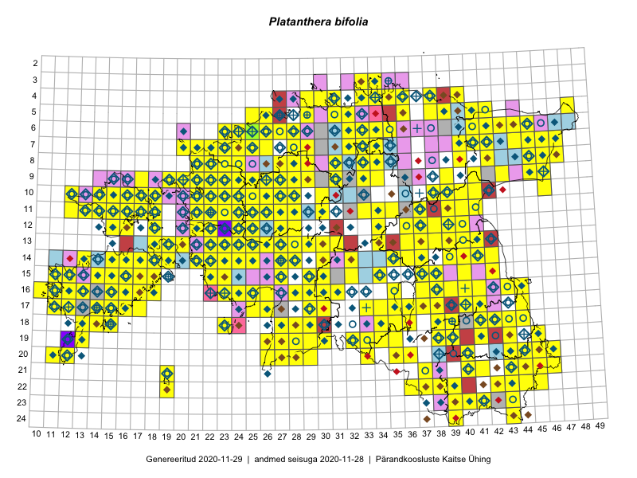

Platanthera bifolia
Uuendatud: 2016-12-01
Kaardile koondatud taksonid: Platanthera bifolia (L.) Rich.

Kaart põhineb 545 kirjel.
Kuvatud viited 20 esimesele andmebaasikirjele, ülejäänud PlutoFis
- Malle Leht: 2015-07-09: : ala
- Toomas Kukk: 2015-06-23T14:30Z: 21-45: ala
- Toomas Kukk: 2015-06-23: 21-45: GPS punkt
- Toomas Kukk, Eerik Leibak: 2015-08-09: 14-15: ala
- Toomas Kukk, Eerik Leibak: 2015-08-09: 14-15: GPS punkt
- Toomas Kukk, Thea Kull, Timo Luhamäe, Ott Luuk, Peedu Saar: 2015-06-28: 13-26: ala
- Toomas Kukk, Eerik Leibak: 2015-08-12: 10-17: ala
- Toomas Kukk, Eerik Leibak: 2015-08-12: 10-17: GPS punkt
- Toomas Kukk, Eerik Leibak: 2015-08-12: 09-17: ala
- Toomas Kukk, Eerik Leibak: 2015-08-12: 09-17: GPS punkt
- Peedu Saar, Liina Oja: 2015-07-23: 07-46: GPS punkt
- Peedu Saar, Liina Oja: 2015-07-24: 09-45: GPS punkt
- Peedu Saar, Liina Oja: 2015-07-24: 09-45: GPS punkt
- Peedu Saar, Liina Oja: 2015-07-24: 09-45: GPS punkt
- Peedu Saar, Liina Oja: 2015-06-11: 15-29: GPS punkt
- Peedu Saar, Liina Oja: 2015-06-12: 12-36: GPS punkt
- Peedu Saar, Thea Kull: 2015-06-19: 17-41: GPS punkt
- Peedu Saar, Thea Kull: 2015-06-17: 17-38: GPS punkt
- Peedu Saar: 2015-07-14: 15-38: GPS punkt
- Ott Luuk, Toivo Sepp: 2015-07-29: 09-31: ala